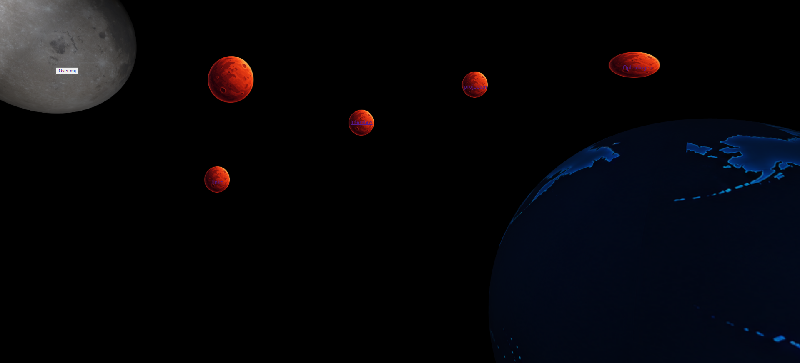

Terwijl ik bezig was met nadenken over: Wat wil ik doen? Wat voor info wil ik uitgeven? Hoe wil ik het eruit laten zien? Dacht ik bij mezelf, ik wil eigenlijk iets speciaals maken. Niet iets saais zoals andere websites maar iets met animaties en de ruimte. Van die normale websites met weinig decoratie, ik hou daar niet zo veel van. Ik vind decoraties en creativiteit heel leuk.
Ik vind de ruimte en planeten best wel interessant en erg mooi. Dus dit project is daar een beetje vandaan gehaald. Deze sheet is over specefiek dit project. Bij 'meer projecten' kunt u meer projecten van mijn schooltijd vinden. Ik heb zelf ongelovelijk veel tijd in dit project gestopt dus dank u wel voor het bekijken!
Oude homescreen
